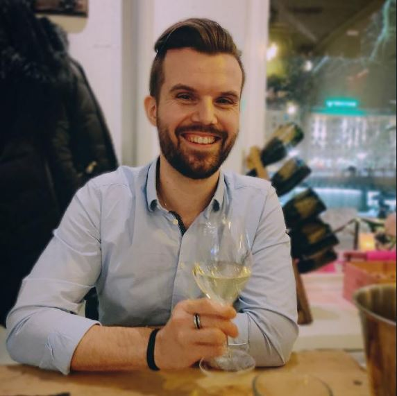

Etusivu Harrastukset Portfolio
Nimeni on
Jonas Christiansen ja olen syntynyt Bærums Verkissa Norjassa 26.09.1991. Lapsena kävin Haslum skole ala-astetta norjaksi
ja keskustelin isoveljeni sekä isän kanssa enimmäkseen norjaa ja äidin kanssa suomea. Perheeni palasi takaisin suomeen 2000-luvun
alussa ja olen tämän jälkeen käynyt peruskoulut ruotsiksi.
Ylä-asteen jälkeen päätin suorittaa kaksoistutkintoa lukion ja kokkikoulun välillä. Suoritettuani kokkikoulusta työskentelin
kahdeksassa eri ravintolassa jotka pääsääntöisesti oli keskittynyt á la carte tai fine dining kategoriaan. Näistä ravintoloista
Edsbacka Krog kuului parhaimmistoon sillä olihan kyseessä kahden Michellin tähden ravintola. Keittiömestarini Christer Skogster työskenteli
tämän jälkeen Ruotsin kuninkaan henkilökohtaisena kokkina.
Työskenneltyäni kolme vuotta ahkerasti ravintola-alalla päätin lähteä käymään Business Information Technology kursseja Haaga-Heliassa ja
löysin tätä kautta uusia taitoja ja lähdin myynti-alalle töihin. Työskentelin Stockmannilla pitkän ajan opiskelun ohella ja yritysmyyntitehtävissä
neljä vuotta tämän jälkeen. Tekniikan maailma on aina kiinnostanut paljon ja tämän takia haluan laajentaa osaamistani
tällä aluella.
| Kieli | Taso |
|---|---|
| Ruotsi | Äidinkieli/kaksikielinen |
| Suomi | Äidinkieli/kaksikielinen |
| Englanti | Hyvä |
| Norja | Hyvä |
| Ranska | Tyydyttävä |
| Latina | Perusteet |
| Yritys | Päivämäärä | Työtehtävä | Työnkuva |
|---|---|---|---|
| Hamari Auditorium Furniture Solutions Oy | 12/2020 - 03/2021 | Myyntipäälikkö | Projektimyyntipäälikkö Ruotsin ja Norjan markkinoilla. |
| Stockmann Oyj | 03/2011 - 12/2020 | Myynnin ammattilainen | Myynti ja asiakaspalvelu. Myyntikoulutukset sekä maahantuojien kontakti. |
| Oy Hygienlab Finland Ltd | 05/2016 - Osa-aikainen | Myynnin ja markkinoinnin konsultti | Myynti ja markkinointi bioteknologia yrityksessä. |
E-mail: jonas.benjamin.christiansen@gmail.com
Puh: xxx- xxxx xxx